Première partie de « Hommage à Balavoine » · Théâtre Claude Debussy, Palais des Festivals, Cannes · dimanche 4 octobre 2026, 19 h · Bohème Production
Le spectacle est monté, minuté à la seconde, enchaîné sans interruption. Chaque carte dit ce que je souhaite et pourquoi ; le détail s'ouvre d'un clic. Je suis chanteur, pas technicien : si vous voyez plus simple ou plus efficace, dites-le-moi.
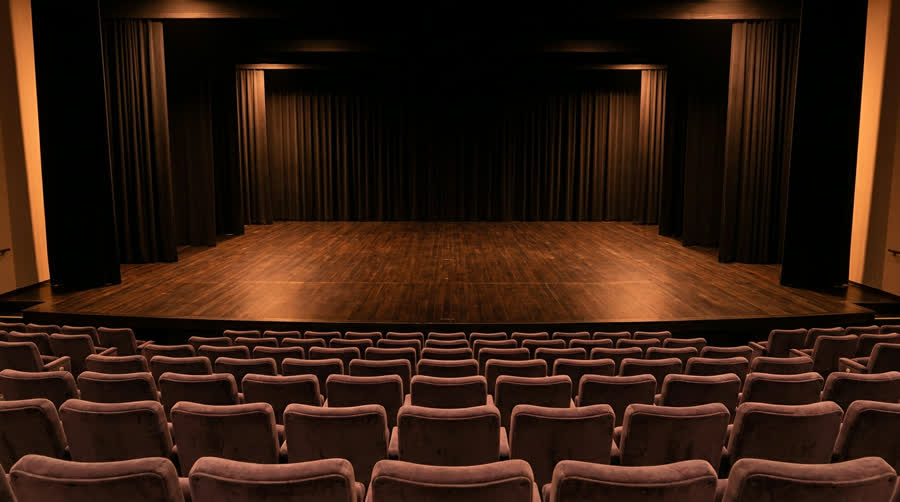
Le backline du groupe s'installe à l'entracte. Toute la mise en scène repose dessus.
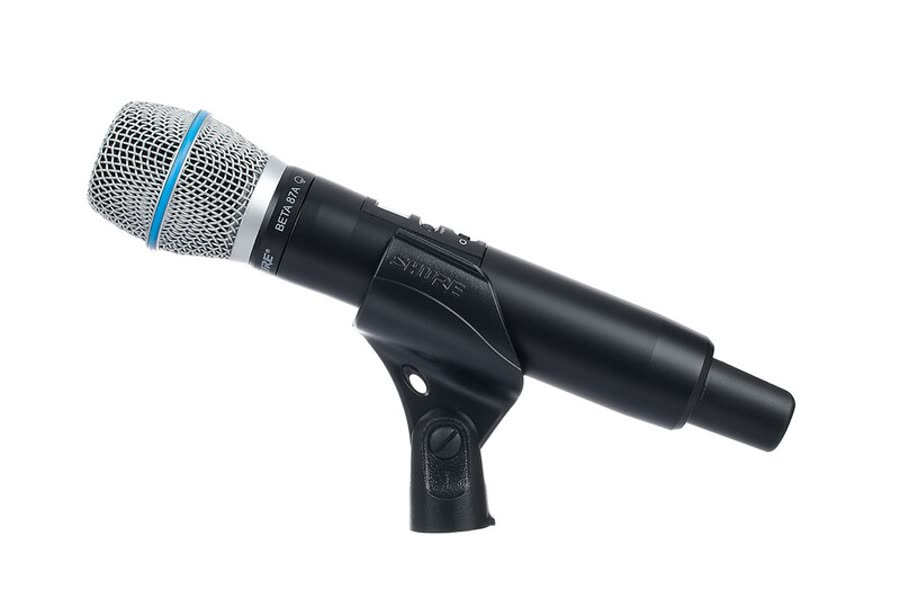
Six canaux ouverts en même temps : les six chantent ensemble sur plusieurs titres.
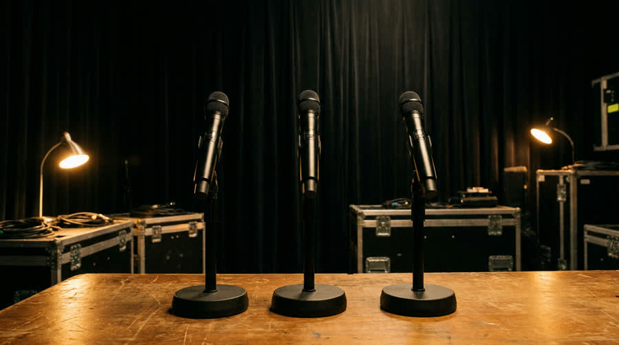
Allumés et réglés. Le medley n'a pas une seconde de pause pour aller en chercher un.
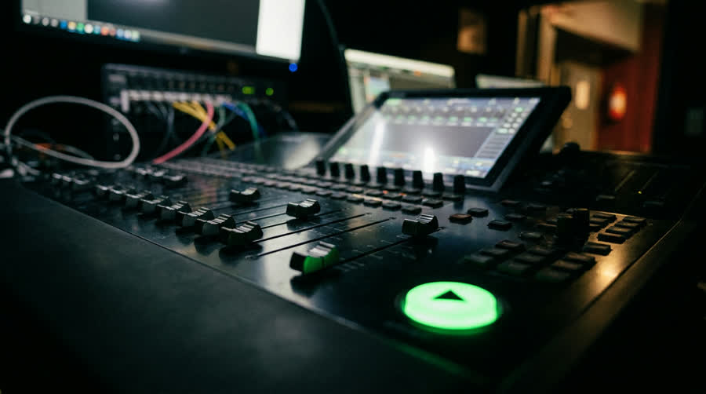
Aucune relance, aucun enchaînement à gérer : la bande couvre les 26 min 50.
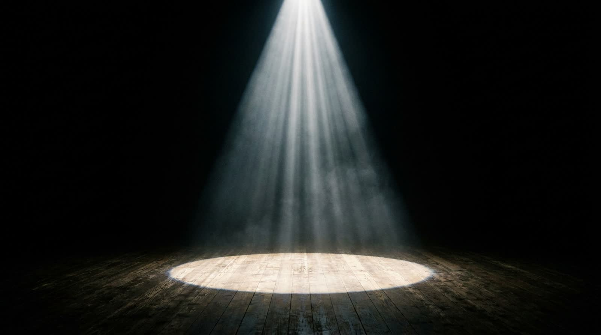
Le cœur de la mise en scène : le spectacle alterne sans cesse solos, duos et ensembles.
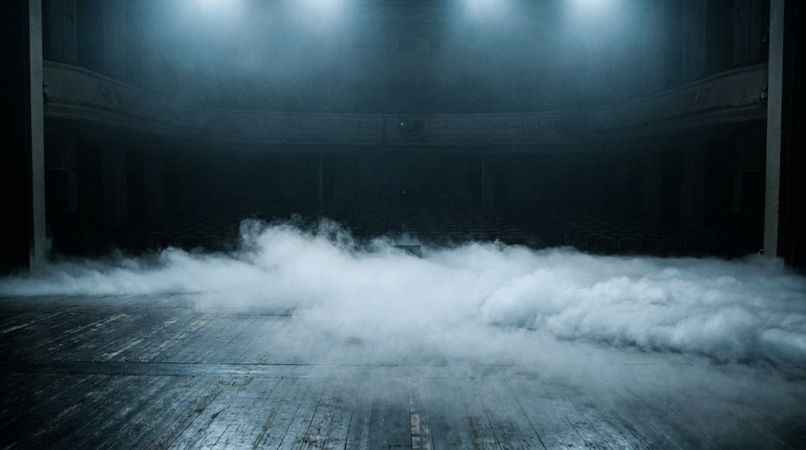
Pour l'instant j'en vois deux, l'ouverture et l'arrêt du temps, mais il pourra y en avoir trois ou quatre : ce n'est pas encore arrêté.
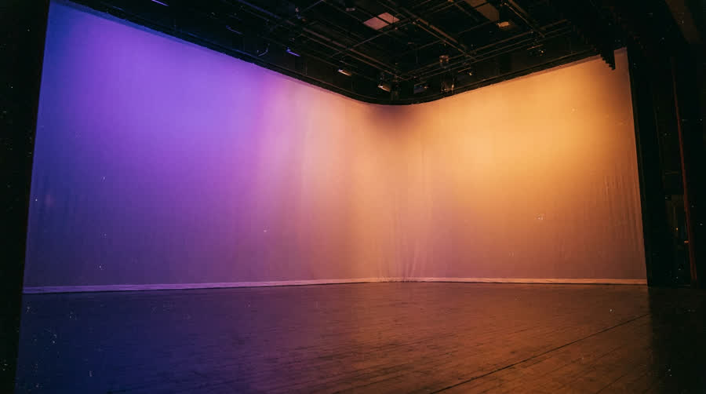
Le marqueur le plus lisible des ruptures entre les trois œuvres.
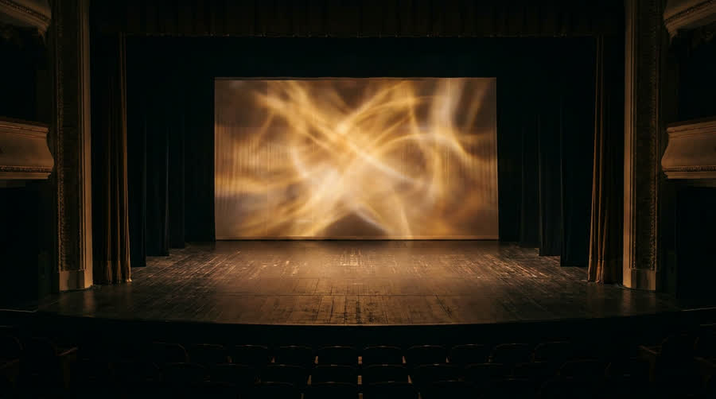
Le spectacle n'a aucun décor : l'image en tiendrait lieu, changeant d'univers avec la musique.
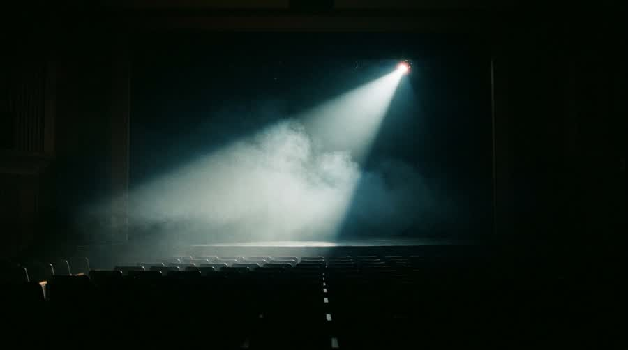
Pour suivre un soliste qui se déplace.
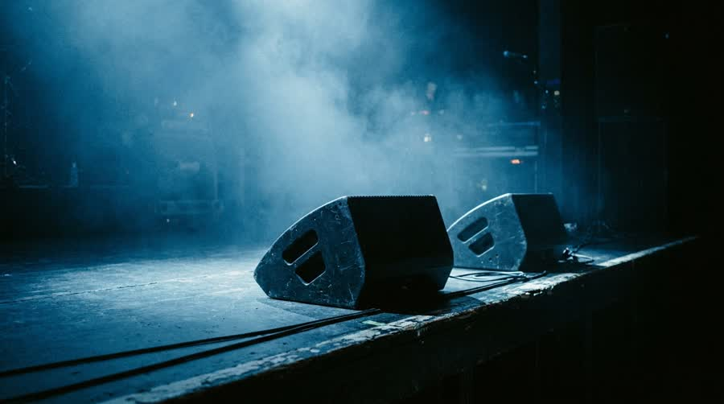
Plusieurs passages se jouent à genoux, notamment Les Sans-papiers.
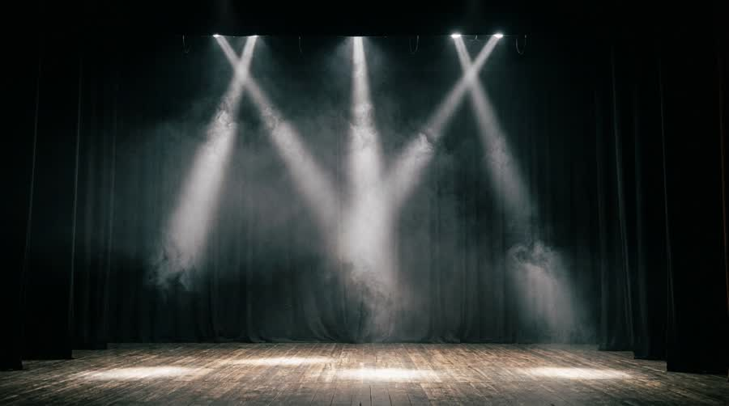
Pour donner du corps aux faisceaux. Demande secondaire, sans obligation.
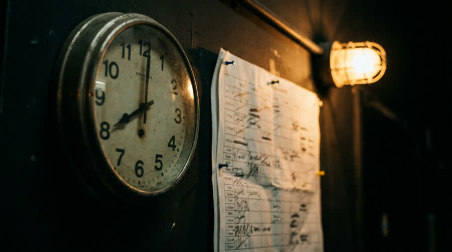
Six chanteurs à placer, une conduite de 30 à 45 états : les horaires du jour J d'abord.
C'est la bande réellement diffusée le 4 octobre. Cliquez n'importe où sur la frise pour vous déplacer : chaque couleur est un univers, chaque trait un titre. Les tops de la conduite se caleront sur ce que vous entendez ici.
Fumée lourde : à l'ouverture (0:00) et à l'arrêt du temps (23:00). Le flash « éclair dans le brouillard » : vers 1:20. Minutage définitif, vérifié à la seconde.
La chaîne est simple : six HF main sur le plateau, deux à trois secours prêts en coulisse, la bande lancée une fois en début de spectacle. Façade pour la salle, retours placés hors des zones jouées au sol.
Ou tout équivalent de votre parc. Faites-le tourner : c'est l'émetteur HF avec la capsule Beta 87A.
Pourquoi le micro main plutôt que le serre-tête ? Ce medley tient de la comédie musicale et du concert : du jeu, des déplacements, des personnages. Le serre-tête demande un réglage voix par voix et un temps de pose dont nous ne disposerons sans doute pas. Le micro main est plus simple et plus sûr, et chaque chanteur dose lui-même son niveau à la distance, ce qui compte avec six voix très différentes, de la voix lyrique à la voix pop.
Cela dit, si vous êtes bien équipés en serre-têtes et que vous les jugez préférables ici, dites-le-moi : je suivrai vos conseils.
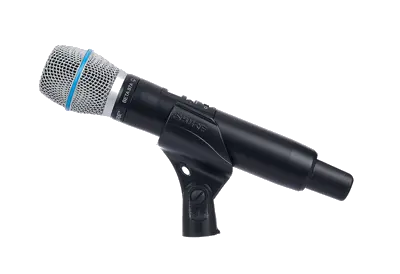
Aucun décor, aucun accessoire : six chanteurs qui occupent tout l'espace. Les positions sont numérotées, chacune reçoit sa douche, et la conduite ne dit plus « éclairer un tel » mais « allumer P3 et P5 ». Survolez un point : sa douche s'allume.
À l'échelle sur les 14 m d'ouverture d'exploitation · les 10 premiers mètres représentés, sur 13,70 m de profondeur totale · répartition indicative, à ajuster ensemble. Le plan de placement titre par titre suivra avec la conduite.
Plutôt qu'un long texte, voici les ambiances du spectacle. C'est ici que votre expérience me sera la plus précieuse : ces images disent l'intention, vous savez mieux que moi comment l'obtenir au Debussy. La conduite complète, tops écrits en repères audibles, suivra dans un document séparé (30 à 45 états).
La conduite, en direct. Lancez un moment : la bande se place, et la scène ci-dessous montre l'intention lumière à cet endroit. Les teintes sont une proposition, rien de plus : c'est vous qui saurez ce qui rend le mieux au Debussy.
Et ci-dessous, les mêmes intentions en images.
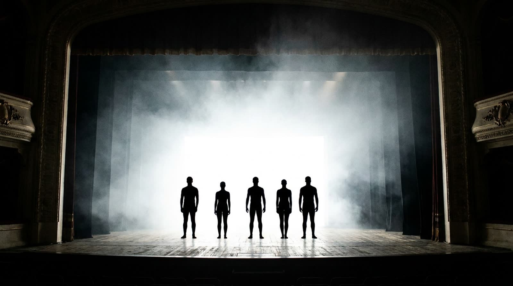
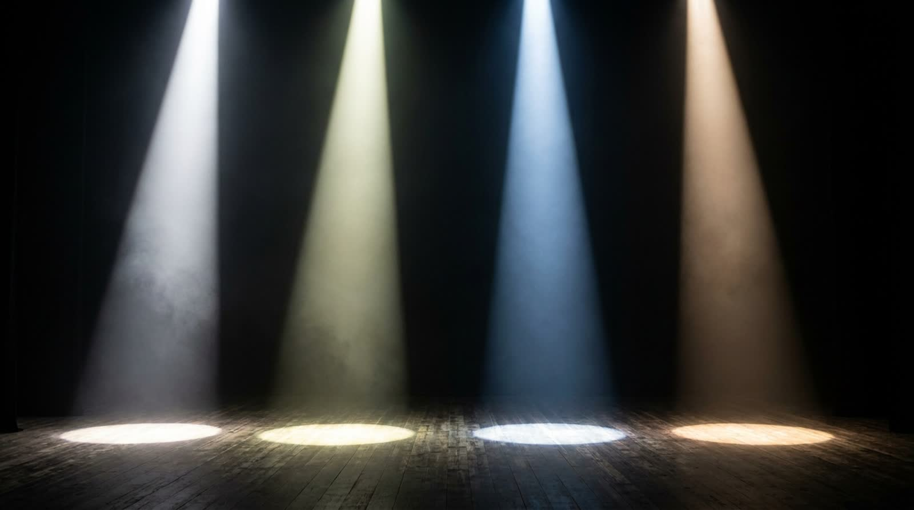
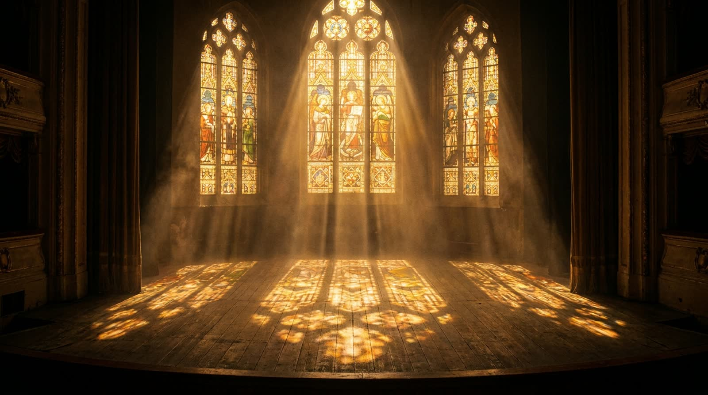
Deux envois au moins : l'ouverture (0:00) et l'arrêt du temps (23:00). D'autres pourront s'ajouter selon ce que permet le produit. Une trace résiduelle ne me gêne pas, elle prolonge l'atmosphère.
Si un écran ou le cyclorama est disponible, l'image tient lieu de décor et change d'univers avec la musique. Sinon, la lumière fera le décor, et je livre un simple WAV.
Une vidéo de travail par bloc : placements, entrées, intentions lumière, en regard de la musique. Si ce format vous est utile, je fabrique la suite au fur et à mesure — dites-le-moi simplement.
Les horaires restent à définir avec vous : c'est l'information dont j'ai besoin en premier. Tout ce qui peut être préparé en amont le sera.
Tout ce dont j'ai besoin de votre part tient ici. Un mail en vrac me va très bien : les numéros suffisent.